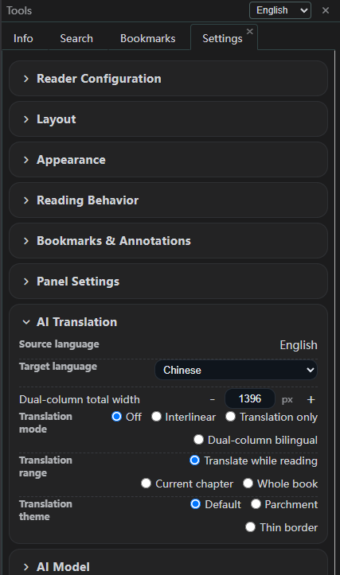

Translation Scope & Languages
First decide how much to translate, then what to translate it into.

Three ranges
| Range | What happens | Good for |
|---|---|---|
| Translate while reading | Translates as you read | Reading only part of a book, or not waiting long |
| Current chapter | Translates the whole current chapter | Reading one chapter straight through |
| Whole book | Translates the entire book | Planning to read it from cover to cover |
The larger the range, the longer a single wait and the more it uses; try a small range first to judge the quality.
Source and target language
- Source language — the book's own language, usually detected automatically.
- Target language — the language to translate into; it must differ from the source.
Start translating
- Open a book and set the mode, range and target language in the AI Translation section.
- Click Start translating on the quick controls bar.
- The Translation Console in the right-hand panel shows progress.
- You can keep reading while it runs; translated parts appear as they arrive.